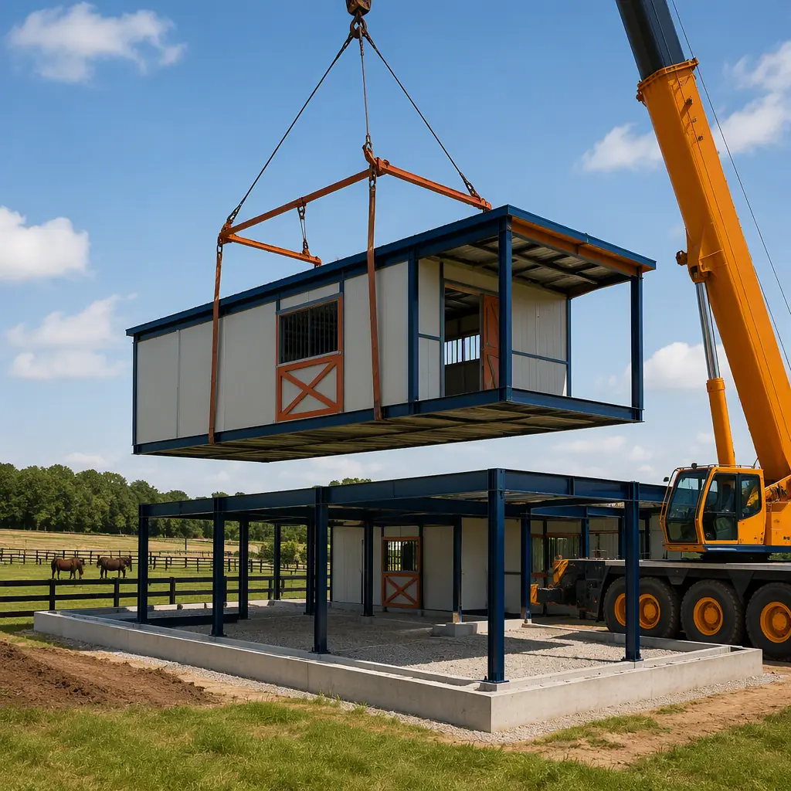
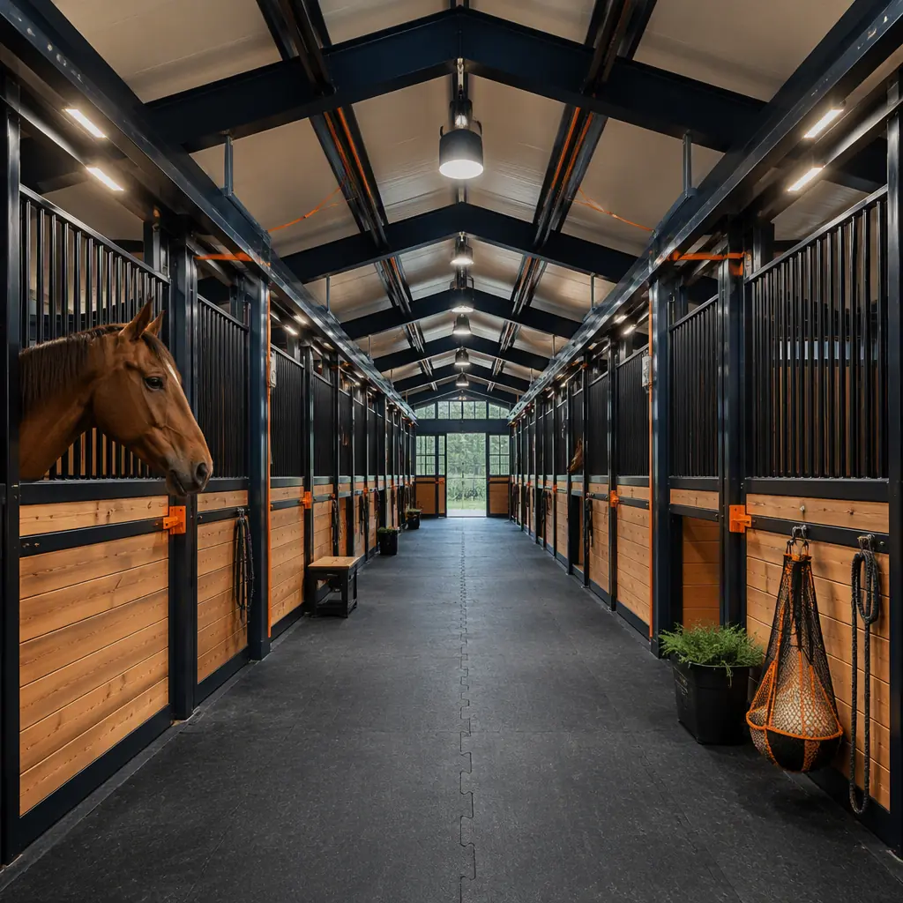
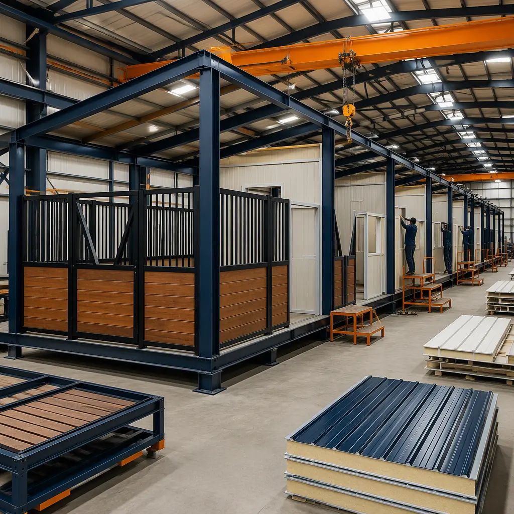

The American equine industry supports roughly 6.6–7.2 million horses and generates an estimated $122 billion in annual economic impact, yet most of the buildings those horses live in are still built the way barns were built a century ago. A conventional stick-built horse barn is one of the slowest and most variable structures in agriculture: framing, siding, roofing, stall construction, and electrical work run as sequential site trades, routinely taking 8–14 months and landing 15–30% over budget when weather and labor shortages stretch the schedule. Meanwhile, the horses cannot wait — every month of construction delay is a month of boarding revenue lost, or a winter spent with horses in temporary shelter. Modular construction compresses the barn to a 10–16 week factory production cycle with a 3–7 day site set, because 80–90% of the building — stalls, aisle framing, ventilation, electrical, and even wash-stall plumbing — is manufactured indoors while the foundation and paddocks are prepared in parallel. This guide explains the modern equestrian building program, how factory-built barns satisfy the specific demands of horse health and safety, and what owners should know about cost, zoning, and delivery.

Why Horse Facility Owners Are Choosing Factory-Built Barns
Horse barns are uniquely suited to modular construction for four reasons. First, the barn is a repetitive building: a 12-stall barn is twelve nearly identical structural bays, and repetition is exactly what factory production does best. Second, the schedule matters more than for almost any other building type — barns are financed against boarding income, and horse owners move animals on fixed dates (foaling seasons, training schedules, show circuits), so a committed delivery date has real dollar value. Third, the building must perform to demanding environmental standards — ventilation, dust control, and drainage — which are far easier to engineer and verify in a factory than in a field-built structure. Fourth, the damage risk is concentrated: the most common and most expensive failure in horse housing is respiratory disease driven by poor air quality, and that is an engineering problem, not a carpentry problem.
For owners coming from agriculture, the structural logic of a factory-built barn is familiar — the same steel-frame, insulated-panel construction that has transformed commercial farm buildings over the last two decades, which we cover in depth in our modular agricultural buildings guide. The difference is that a horse barn carries a residential-grade interior fit-out — finished stall fronts, rubber flooring, heated wash stalls — on top of that agricultural shell, and modular delivery packages both in one factory-built product.
The Barn Building Program: Stalls, Aisles, and the Anatomy of a Working Stable
A functional horse barn is a tightly specified building, and the dimensions are not negotiable. The standard program for a center-aisle boarding barn breaks down as follows:
- Stalls (50–60% of the footprint). Standard stall size is 10×10 ft for average horses, 12×12 ft for large breeds and stallions, and 12×14 ft for foaling stalls. Stall fronts are typically 4–5 ft high solid kick panels with vertical bars or mesh above, and every stall needs a minimum 10 ft ceiling height for air volume.
- Aisles (15–20%). A center aisle should be 10–12 ft wide to allow two horses to pass safely, with feed alleys at 8–10 ft where used. Aisle floors are the highest-traffic surface in the barn and need a dust-free, slip-resistant finish over a compacted base.
- Tack and feed rooms (5–10%). Climate-controlled tack rooms for saddles and leather goods, plus rodent-proof feed rooms sized for 2–4 weeks of grain and supplement storage.
- Wash stalls and grooming (5%). At least one 12×12 ft wash stall with hot and cold water, floor drains, and non-slip matting — the plumbing-densest part of the building, and one of the biggest advantages of factory installation.
- Support spaces (5–10%). Office, lounge, restrooms, laundry, and equipment storage, arranged to keep human traffic out of the working aisle.
Every element maps onto factory production: stall partitions arrive pre-assembled with kick panels and hardware installed, aisle and stall floors are built on the module frame with the correct drainage slopes, and wash-stall plumbing is pressure-tested before shipment. The steel frame behind all of it — engineered connections, documented tolerances, factory QA — is the same system covered in our modular steel construction guide.

Ventilation and Air Quality: The Engineering That Keeps Horses Healthy
The single most important engineering decision in a horse barn is ventilation, because the building itself is the primary source of the contaminants that make horses sick. A horse produces 30–50 lb of manure and 5–10 gallons of urine per day; urine breaks down into ammonia, and ammonia levels above 10–25 ppm irritate airways and open the door to equine asthma and recurrent airway obstruction. Add hay dust, mold spores, and bedding particles, and a poorly ventilated barn is a respiratory hazard. The industry standard is 4–8 air changes per hour in winter (enough to control ammonia without chilling the building) and 10–20 air changes per hour in summer, with continuous airflow from the aisle across the stalls and out through ridge or gable vents.
Factory-built barns engineer this in rather than hoping for it. Ridge ventilation is integrated into the roof module, soffit intakes are detailed into the wall panels, and optional mechanical systems — high-volume low-speed fans, exhaust fans with thermostatic control, and misting for hot climates — are pre-installed and tested in the factory. The same controlled-environment logic applies to heating: radiant heaters in wash stalls and foaling areas, frost-free plumbing, and insulated panels that hold heat in winter and reject it in summer. For the broader mechanical design principles behind factory-built ventilation and indoor air quality, see our modular HVAC and indoor air quality guide.
Fire Safety and Hay Storage in Prefabricated Barns
Fire is the catastrophic risk in horse housing, and barn design has to assume the building may be empty when a fire starts — horses cannot be evacuated in minutes. The two structural decisions that matter most are materials and hay separation. Steel-frame construction with non-combustible exterior panels eliminates the largest fuel load that kills stick-built barns, and factory-built barns can achieve a 1–2 hour fire-resistance rating on walls separating the stable from hay storage, feed rooms, and mechanical spaces. Hay is the real hazard: a single large round bale contains enough energy to destroy a barn, and codes increasingly require hay storage to be separated by fire-rated walls or located in a detached structure, with smoke and heat detection, clearly marked exits, and electrical installed to agricultural code with dust-tight fixtures.
Because the fire-safety package is designed into the factory module — fire-rated partitions, penetration sealing, detector placement, and exit layout — the owner receives a documented fire plan with the building, not a retrofit added after inspection. The compliance framework for factory-built agricultural and recreational structures, including how authorities review pre-engineered buildings, is covered in our modular fire safety guide and our permitting and zoning guide.
Indoor Arenas and Clear-Span Riding Halls
Most equestrian projects pair the barn with an indoor arena, and that is where modular construction shows its clear-span strength. A competition or training arena needs an unobstructed riding surface — typically 80×150 ft for a small private arena, 120×240 ft for a competition facility — with 60–90 ft clear spans and 16–22 ft eave heights so riders never see a column or a low roof line. Factory-built steel portal frames deliver exactly that: modules with 60–90 ft clear spans are manufactured in the factory, shipped to site, and spliced into continuous halls, with the roof system, insulation, and cladding installed in the factory so the hall is weathertight from set day.
The arena floor is the engineering challenge: a 4–6 in footing layer of sand and fiber (or rubber-and-sand blends for dressage) over a compacted base with sub-surface drainage, designed by a footing specialist for the discipline the arena serves. Modular delivery does not change the footing design — that is site work — but it means the building that protects the footing is up in days, so the expensive footing installation is never exposed to weather. The same clear-span logic serves indoor recreation buildings of all kinds, which we cover in our modular gym and fitness center guide.

Factory Production and the Site Set
The barn is built indoors because that is where quality and speed are controlled. Stall fronts, kick panels, and doors are fabricated and finished at workstations; ventilation, electrical, and plumbing are installed and tested on the line; and every module passes inspection gates before it is cleared for shipment. Weather independence is a contractual asset for farm projects — a barn for a property in the Northeast or the Midwest does not lose its schedule to frozen ground or spring rain, because the factory environment is climate-controlled year-round. The production-line discipline behind this — weld verification, dimensional checks, MEP testing at defined gates — is the same system MODURA applies to every building type, documented in our factory quality control guide.
On site, the story is short by design. Foundations are frost-protected piers or shallow footings, cast while the factory builds the modules. On set day, a crane lifts each module onto the foundation, the crew bolts sections together, seals the envelope joints, and makes the inter-module utility connections — a 12-stall barn is typically set and weathertight in 3–5 days, with interior finish, stall accessories, and exterior work (paddocks, run-in sheds, fencing) following over the next 2–4 weeks. The full schedule comparison of factory-built versus conventional construction is in our modular construction timeline analysis.
Cost and Timeline Benchmarks for Equestrian Buildings
For a typical 5,000–8,000 sq ft center-aisle boarding barn with 12–20 stalls, modular delivery lands at $55–90 per sq ft complete with stalls, electrical, plumbing, and interior finish — compared with $75–120 per sq ft for equivalent stick-built construction. The 25–35% saving comes from factory labor efficiency, compressed schedule, and the elimination of weather-driven rework. Indoor arenas run leaner at $30–55 per sq ft for the clear-span shell, with the footing, lighting, and ventilation as separate line items. The schedule is the bigger number for owners: a modular barn is ready for horses 5–10 months earlier than a stick-built equivalent, which for a boarding operation at 12–20 stalls and $400–700 per stall per month means the building often pays its own premium before a conventional barn would have broken ground on framing.
| Benchmark | Stick-Built Barn | Modular Barn |
|---|---|---|
| Design through occupancy | 8–14 months | 4–7 months |
| Building cost (12–20 stall) | $75–120 / sq ft | $55–90 / sq ft |
| On-site set window | N/A (sequential trades) | 3–7 days |
| Fire-resistance options | Depends on site framing | 1–2 hr rated assemblies |
| Ammonia-control ventilation | Retrofit after inspection | Engineered in, factory-tested |
| Relocatability | None | Full — re-deployable to a new property |
Owners should also weigh total cost of ownership: the factory-built envelope delivers the insulation and airtightness performance documented in our building envelope guide, cutting the heating bill that dominates winter barn operating costs, and the building can be relocated or expanded when the operation grows. Full lifecycle cost modeling is covered in our total cost planning guide, and per-square-foot benchmarks across building types are in our modular construction cost guide.
A horse barn is a health system with walls, not just a building. The owners who get the best outcomes treat ventilation, drainage, and fire separation as engineered systems — and factory production is the most reliable way to deliver those systems documented, tested, and on schedule.
Zoning, Permits, and Financing an Equestrian Facility
Equestrian facilities sit at the intersection of agricultural and commercial zoning, and the permit path depends on how the facility is used. A private barn for personal horses on agricultural land may require only an agricultural building permit; a boarding operation with 10+ stalls, a riding school, or a competition venue is typically a commercial or assembly occupancy with parking, septic, and accessibility requirements. Owners should confirm with the local planning department before design: minimum lot sizes for stables, setbacks from property lines and watercourses, manure-management rules, and whether the property is eligible for agricultural zoning exemptions. Our permitting and zoning guide walks through the approval sequence for factory-built structures, including how jurisdictions review pre-engineered buildings.
Financing follows the use. Owner-occupied private barns are commonly financed with farm loans or home-equity lines; boarding and training facilities are commercial projects financed against projected stall revenue, with lenders increasingly comfortable with factory-built collateral because the building is documented, insurable, and movable. The lending and insurance framework for modular projects — including how lenders value factory-built assets — is covered in our construction lending guide and our insurance and risk management guide.